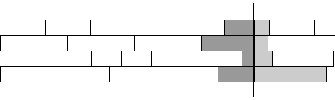

Advent of Code 2020 — days 12-13
I don’t have a lot of time today, so I will only describe the solutions for two days. I promise that I will catch up to the day the puzzles are released, but it probably won’t be until after the weekend…
Day 12 — Rain Risk
In day 12 we are navigating a ship—because why not?
We have another virtual machine. It isn’t described exactly like a virtual machine, so it might be less obvious than the machine in day 8, but it is what we have. There is a state—the position and the angle we are facing—and there are instructions for modifying the state. So, without thinking too deeply about it, I did the same as in day 8: I made a class for the state, put the operations in it as methods, then made a table that maps from opcodes to actions, and ran the program.
from math import cos, sin, pi
class Position(object):
def __init__(self):
self.x = 0.0
self.y = 0.0
self.angle = 0.0 # facing east
@property
def manhattan_dist(self):
return abs(self.x) + abs(self.y)
# Ops...
def N(self, amount): self.y += amount
def S(self, amount): self.y -= amount
def E(self, amount): self.x += amount
def W(self, amount): self.x -= amount
def L(self, angle): self.angle += pi * angle / 180.0 # radiants
def R(self, angle): self.L(-angle) # subtraction bus R == -L
def F(self, amount):
self.x += amount * cos(self.angle)
self.y += amount * sin(self.angle)
pos = Position()
dispatcher = {op: getattr(pos, op) for op in "NSEWLRF"}
f = open('/Users/mailund/Projects/adventofcode/2020/12/input.txt')
for op in [line.strip() for line in f]:
dispatcher[op[0]](int(op[1:]))
After the program, we want the Manhattan distance for the position. I implemented that as a property, and I don’t really know why. I guess I just felt like it. A method would be fine, or you could even extract the coordinates and compute it directly when you answer the puzzle.
print(f"Puzzle #1: {round(pos.manhattan_dist)}")
This was entirely standard code, following the same template as for day 8. (But I don’t plan on generating machine code for this one—once is enough).
For Puzzle #2, we change the virtual machine. Now, the state is both the location of the ship and a waypoint, and some of the operations modify the waypoint, while others modify the ship.
I took the direct approach and refactored the code into a Waypoint and a Ship class, with a position in the waypoint and waypoint and position in the ship. I put the waypoint operations in that class, and the others in the ship, with a dispatch between ship and waypoint for the waypoint operations. That way, I can build the table for the operations the same way as before.
from math import cos, sin, pi
class Waypoint(object):
def __init__(self):
self.x = 10.0
self.y = 1.0
# Ops...
def N(self, amount): self.y += amount
def S(self, amount): self.y -= amount
def E(self, amount): self.x += amount
def W(self, amount): self.x -= amount
def rotate(self, angle):
angle = pi * angle / 180.0 # use radiants
self.x, self.y = self.x * cos(angle) - self.y * sin(angle), \
self.x * sin(angle) + self.y * cos(angle)
class Ship(object):
def __init__(self):
self.waypoint = Waypoint()
for op in "NSEW": setattr(self, op, getattr(self.waypoint, op))
self.x = 0.0
self.y = 0.0
@property
def manhattan_dist(self):
return abs(self.x) + abs(self.y)
# Ops...
def L(self, angle): self.waypoint.rotate(angle)
def R(self, angle): self.waypoint.rotate(-angle)
def F(self, amount):
self.x += amount * self.waypoint.x
self.y += amount * self.waypoint.y
ship = Ship()
dispatcher = {op: getattr(ship, op) for op in "NSEWLRF"}
f = open('/Users/mailund/Projects/adventofcode/2020/12/input.txt')
for op in [line.strip() for line in f]:
dispatcher[op[0]](int(op[1:]))
print(f"Puzzle #2: {round(ship.manhattan_dist)}")
The only tricky part was the trigonometry for changing the angle. I didn’t notice until later that all the changes are multiples of 90 degrees.
Since we are looking at multiples of 90 degrees, rotations are simpler. If you turn 90, you map \( (x,y) \) into \( (-y,x) \). Do it twice, and you turn 180 degrees, so you go \( (x,y) \mapsto (-x,-y) \). And 270 sends you to \( (y,-x) \). Take the angle you have to turn, divide it by 90, and apply this rule that many times. Or make a table for the transformations. It is likely to be simpler and faster than the trigonometry, but I didn’t see that the angles were this regular, and if it was in the problem description I missed it.
However, if you are simplifying the code, you can do better than building a table for the rotations. You can use complex numbers.
Both the waypoint and the ship contain a two-dimensional position, and when you look at a complex number the right way, that is what they are. We can use the real part for the x-coordinate and the imaginary part for the y-coordinate. When we move East/West, we add an amount to the real part; when we move North/South, we add an amount to the imaginary part. That simplifies the arithmetic.
What is more interesting is how complex numbers help us with the rotations. If you multiply complex numbers \( x+iy \) and \( v + iw \) you get \( (xv-yw) + i(xw+yv) \). That is just how multiplication is defined for these buggers. But it is interesting for us, because we can construct the transformations from above from this. If we take the imaginary number \(i\) and put raise it to increasing powers we get
$$i^0 = 1 +i0$$ $$i^1 = 0+i1$$ $$i^2 = -1+0i$$ $$i^3 = 0-1i$$
after which it cycles back to 1 again. Now take a point, \( (x,y) \) represented as a complex number, \( z = x+iy \), and multiply it with these powers.
$$ (x,y) \mapsto (x,y)\cdot i^0 = (x+iy)(1+i0) = x + iy = (x,y) $$ $$ (x,y) \mapsto (x,y)\cdot i^1 = (x+iy)(0+i1) = -y + ix = (-y,x) $$ $$ (x,y) \mapsto (x,y)\cdot i^2 = (x+iy)(-1+i0) = -x - iy = (-x,-y) $$ $$ (x,y) \mapsto (x,y)\cdot i^3 = (x+iy)(0-i1) = y - ix = (y,-x) $$
These are the transitions from above. So, if you want to rotate by 90 degrees, you multiply your coordinates (as a complex number) by \( i^1 \). If you want to rotate them more, in steps of 90 degrees, raise \( i \) to higher powers. With this trick, we can solve the puzzle like this:
class Ship(object):
def __init__(self):
self.wp = 10 + 1j
self.pos = 0 + 0j
@property
def manhattan_dist(self):
return abs(self.pos.real) + abs(self.pos.imag)
# Ops...
def N(self, amount): self.wp += amount*1j
def S(self, amount): self.wp -= amount*1j
def E(self, amount): self.wp += amount
def W(self, amount): self.wp -= amount
def L(self, angle): self.wp *= 1j ** (angle // 90)
def R(self, angle): self.wp *= 1j ** (-angle // 90)
def F(self, amount): self.pos += amount * self.wp
ship = Ship()
dispatcher = {op: getattr(ship, op) for op in "NSEWLRF"}
f = open('/Users/mailund/Projects/adventofcode/2020/12/input.txt')
for op in [line.strip() for line in f]:
dispatcher[op[0]](int(op[1:]))
print(f"Puzzle #2: {round(ship.manhattan_dist)}")
In Python, the imaginary number is j. Well, if you have a number in front of j it is an imaginary number; j is just a variable name otherwise. But you create complex numbers using j. Mathematicians use \(i\) for imaginary numbers and electrical engineers use \(j\), and Python follows the latter convention. (I use the former here, except in code).
This implementation only handles angles that are multiples of 90 degrees, but we can generalise it. The trigonometry we used for rotations earlier can also be phrased in terms of complex numbers. The rotation worked by mapping \( (x,y) \) to \( (x\cos\theta - y\sin\theta, x\sin\theta + y\cos\theta) \) for angle \(\theta\). If we call \( v=\cos\theta \) and \( w=\sin\theta \), then that is \( (xv - yw, xw + yv) \) which is the product of complex numbers \( x+iy \) and \( v+iw \). So if we can translate an angle \(\theta\) into the number \(\cos\theta + i\sin\theta\), then we have a general rotation. And we can, because that is what exponentiation does to complex numbers.
If you take an angle \(\theta\) (in radiants), then \(e^{i\theta} = \cos\theta + i\sin\theta\). Thus, we can get a general ship implementation with complex numbers like this:
class Ship(object):
def __init__(self):
self.wp = 10 + 1j
self.pos = 0 + 0j
@property
def manhattan_dist(self):
return abs(self.pos.real) + abs(self.pos.imag)
# Ops...
def N(self, amount): self.wp += amount*1j
def S(self, amount): self.wp -= amount*1j
def E(self, amount): self.wp += amount
def W(self, amount): self.wp -= amount
def L(self, angle): self.wp *= e ** (angle * pi/180 * 1j)
def R(self, angle): self.wp *= e ** (-angle * pi/180 * 1j)
def F(self, amount): self.pos += amount * self.wp
Day 13 — Shuttle Search
This was my least favourite day so far, because the difficulty entirely depends on whether you happen to remember a result from number theory. I was lucky, but I dislike puzzles whose difficulty depends so crucially on whether you know a bit of trivia. But I am getting ahead of myself…
Read the program description. If you haven’t already solved Puzzle #1, then you can’t see the part that I was hinting at, so we will quickly get the first puzzle out of our way and then get to Puzzle #2, that is either trivial or hard, depending on your background.
We get a list of busses, that depart at various frequencies. Most of the explanation is misdirection, because the only thing that matters is that bus \(b_i\) will depart at integers that are multiples of \(b_i\), i.e., \(0b_i, 1b_i, 2b_i, \ldots\). We then have a departure time, let’s call it \(d\), and we must identify the first bus that departs after \(d\), \(b\), and the waiting time between \(d\) and when it departs, \(w\), and the answer to the puzzle is \(b\cdot w\).
Whenever you have a problem that involves something that happens at regular intervals, you want to look at modular arithmetic. It isn’t always where a solution lies, but it is more often than not.
Usually, it is something simple, like “a bus leaves the station every 17 minutes, from six in the morning to six in the evening, write down the schedule”. That means it is a period of 17 minutes, but you can’t write “6:00, 6:17, 6:34, 6:51, 6:68, 6:85, …” because an hour only has 60 minutes. But you can get the minutes modulo 60, minute = k * 17 % 60 and the hour by devision hour = k * 17 // 60 (remember integer division, which is // in Python).
Here, the situation is not quite that simple, but almost. We need to work out the waiting time for each bus, which isn’t the bus’ frequency modulo anything. But consider the busses’ periods, \({0b_i, 1b_i, 2b_i, \ldots, kb_i, (k+1)b_i, \ldots}\). We can draw them like this, where the vertical line would be the departure time we are interested in.

The busses run in different intervals, the boxes, and when we put down a departure time, we cut one of those intervals in two (where one of the two parts could have length zero, if the departure time is a multiple of the frequency). In the picture, I have show the two parts in dark and light grey. If you do division \(d / b_i\) you will get the number of white boxes for bus \(b_i\) before the departure time. That is the whole number of times you can complete an interval before \(d\). The dark gray is the remaining time up to \(d\), or \(d\) mod \(b_i\). We are interested in the light grey, which must then be \(b_i - d\) mod \(b_i\).
When you have done these kinds of problems a few times, your brain will jump to this inference faster that you can read the explanation, but if you are ever stumped, make a figure like this, and things will likely quickly click. Every time I run into a problem where the solution isn’t immediately obvious, I start drawing. It is only when I have done that enough that my subconscious programmer take over, and just tells me the solution, that I don’t draw. Drawing, and solving puzzles, are intrinsically tied for me.
Anyway, when we realise that waiting times are \(b_i - d\) mod \(b_i\), finding the smallest and multiplying the waiting time with the bus frequency is trivial:
f = open('/Users/mailund/Projects/adventofcode/2020/13/input.txt')
depart = int(f.readline())
busses = [int(bus) for bus in f.read().strip().split(',') if bus != 'x']
# Puzzle #1: Get the earliest bus after departure...
w, b = min((b - depart % b, b) for b in busses)
print(f"Puzzle #1: {b * w}")
That only took a few minutes to solve, and Puzzle #2 was just as simple (although I did spend a bit longer implementing an algorithm that I didn’t find out was already in SymPy until later). But Puzzle #2 is only simple if you know the Chinese Remainder Theorem, and this is why I don’t like day 13. I find it unreasonable that those who are lucky to know CRT (and lucky enough to remember it) will have a trivial problem, while those that do not, are in for the unpleasant task of reinventing it. There are always cases where knowing a trick can greatly speed up problem solving, but this is one piece of trivia that makes or breaks the problem. And it is not something you run into that often. I don’t think I have used CRT in 20 years, and it was utter undiluted luck that I recognised it here.
There is lots of mathematics that I once new but couldn’t tell you what is if my life depended on it—I know there is something called a Gaussian curvature, but if you put a gun to my head and demanded that I tell you what it is, I would be dead. There are some tricks and techniques that I think every programmer should know, and things that pop up often in everyday programming is reasonable to expect people to know. While the CRT is not completely obscure, I wouldn’t put it in this category.
You can expect that a mathematician will recognise it, of course. A few days later I talked to a friend from the Math department, and when I explained the puzzle I wasn’t 30 seconds in before he said “du skal bruge den kinesiske restsætning!” (He was speaking Danish; it means “you need to use the Chinese remainder theorem”—google translate will back me up on this). So yeah, for the right people, this is essential knowledge. I don’t think it is for programmers, and judging from Twitter responses to this puzzle, people who didn’t know CRT were having a tough day. I think that is unfair.
Anyway, read on, and then you will also know CRT.
The puzzle is now this: We consider the index at which we see busses (after compensation for “missing” busses, encoded as ”x”). I will call them offsets, because that is how we will use them. Each bus, \(b_i\) has an offset \(o_i\), and we need to find a time, \(t\), such that bus \(b_i\) will depart at time \(t+o_i\) for all busses \(b_i\). We know that the waiting time for bus \(b_i\) will be \(b_i - t\) mod \(b_i\)—we just worked that out in Puzzle #1—so the task is to find \(t\) such that \(b_i -t\) mod \(b_i = o_i\), or \(t\) mod \(b_i = b_i - o_i\).
We can then reformulate this, once more, to say that we have \(k\) equations:
$$t \equiv b_1-o_1 \mod b_1$$ $$t \equiv b_2-o_2 \mod b_2$$ $$\ldots$$ $$t \equiv b_k-o_k \mod b_k$$
That rang a bell! I freely admit that I had to look up the Chinese remainder theorem to check, but I was right. It says that for numbers \(a_1,\ldots,a_k\) and \(n_1,\ldots,n_,\) with \(N=\prod n_i\), there is a unique solution \(0\leq x < N\) to
$$x \equiv a_1 \mod n_1$$ $$x \equiv a_2 \mod n_2$$ $$\ldots$$ $$x \equiv a_k \mod n_k$$
if the \(n_i\) are co-prime. The co-prime is important, and was part of what triggered my memory; I had just noticed that the busses had prime numbers, and figured there was a reason for that—which started my brain searching for such a reason.
Anyway, just because we know that something exists, doesn’t mean that we can find it. We know that all integers can be factored into primes, but that doesn’t tell us what the factorisation is for any given number. With CRT, however, there is an algorithm that will give us \(x\). Since it is unique between 0 and \(N\), it is also the smallest, so it is the solution to our puzzle.
I had to google around to find out how to do this, and then implement it, but you don’t have to. Because it is in SymPy. You can solve Puzzle #2 this easily:
f = open('/Users/mailund/Projects/adventofcode/2020/13/input.txt')
depart = int(f.readline())
busses = [(offset, int(bus))
for offset, bus in enumerate(f.read().strip().split(','))
if bus != 'x']
from sympy.ntheory.modular import crt
n = [b for o,b in busses]
a = [(b - o) for o,b in busses]
x, N = crt(n, a)
print(f"Puzzle #2: {x}")
The crt() function returns \(x\) and \(N\), and our puzzle answer is \(x\).
If I knew I had crt() readily available, it would have been a 10 minutes puzzle. It was closer to 30 because I had to find the algorithm and implement it. But that is still quite a bit faster than if I had to come up with a solution from nothing.